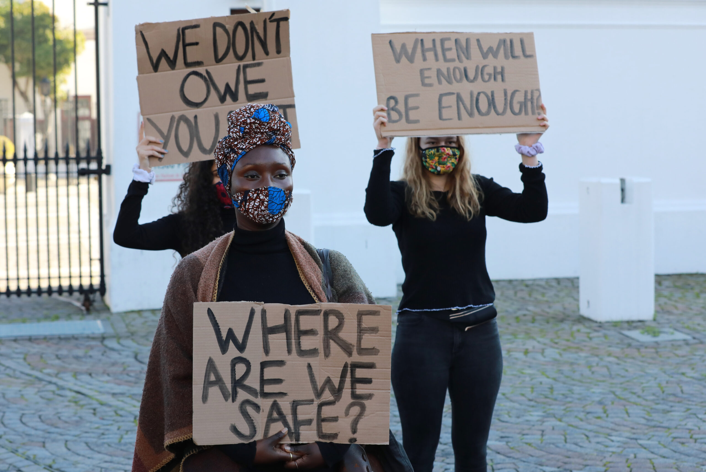

Does not discriminate any person of any race,age,sexuality orrientation, religion or gender can be a victim or perpetrator of Gender Based Violence.
Men are encouraged to join movement to end gender based violence
Physical violence
Verbal Violence
Sexual Violence
Socio-economic Violence
Domestic Violence
Attitudes that offer men over women .There is an acknowledgementin the literature that GBV is caused by an interplay of individual community ,economic cultural and religious factors of interacting at different levels of society.
Frustrations
Violence at home or neighbourhood
Exposure to violent media
Interrupt abuse
Stop Rape Culture
Stop victim blaming
Interrupt sexist and discriminatory language
Develop an action plan
Safety
Respect
Honesty
Confidentiality
ICRC
UNFPA
Shukumisa
Women Watch